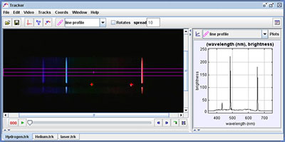

The line profile tool also provides an interactive and highly visual way for students to study visible spectra. In this experiment, students use the line profile to generate spectral intensity plots of nonthermal emission sources.
The spectrum images are obtained by placing a diffraction grating directly in front of the video camera lens (a digital still camera could also be used). Red and green HeNe lasers with known wavelengths (633 nm and 543 nm, respectively) are reflected from a small tab protruding below the slit to enable calibration of the spectra.
In lab, students use hand-held gratings to observe all spectra by eye but use these prerecorded videos for analysis.
